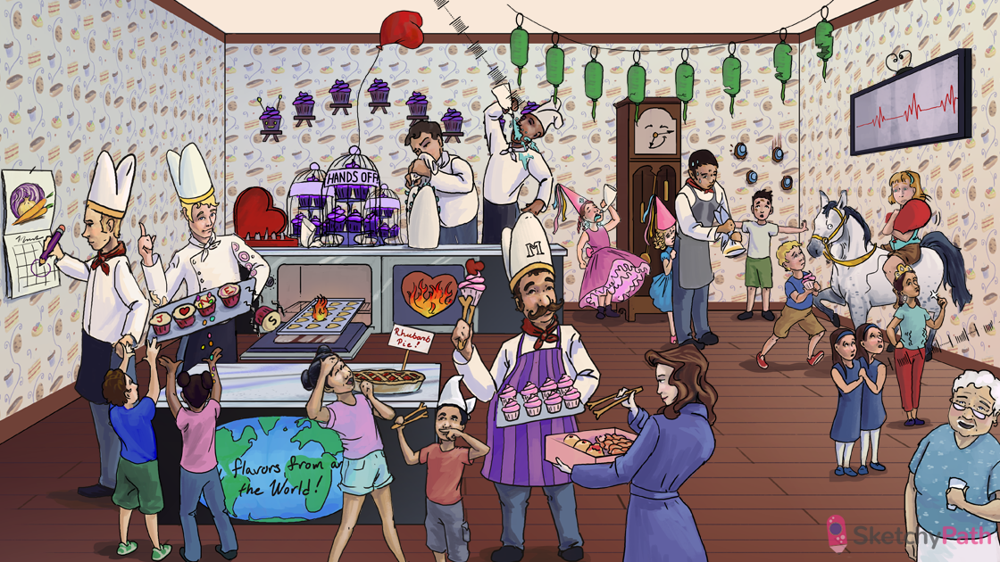

Rhubarb pie: acute rheumatic fever (ARF - acute multisystem inflammatory disease that can follow a group A strep infection)
Bicuspid chef hat: ARF primarily affects the mitral valve
Striped pie chef: Strep pyogenes (group A strep)
Red neck kerchief: streptococcal pharyngitis can lead to rheumatic fever (NOT skin or other group A strep infections)
World map: ARF is prevalent in underdeveloped countries
Kids: ARF most often affects children between 5 and 15 years old
Later in the month: ARF usually develops ~2-3 weeks after strep pharyngitis
Antibody tongs: cardiac damage in ARF is caused by a type II hypersensitivity reaction (antibody mediated)
Kid mimicking chef: autoantibodies in ARF are are formed by molecular mimicry
JONES cupcakes: JONES criteria for diagnosing ARF → Joints (migratory polyarthritis), O (myocarditis), Nodules (sub-Q), Erythema marginatum, Sydenham chorea
“J” with frosting on elbow: “Joints” → ARF commonly presents with migratory polyarthritis (usually large joints such as the elbow, knees, and ankles)
“O” heart: ARF can cause pancarditis affecting the pericardium, myocardium, and endocardium (valves)
“N” with nodular candies: “Nodules” → ARF can present with subcutaneous nodules (form mostly on extensor surfaces of the forearm and may show central fibrinoid necrosis)
“E” with ring pattern: “Erythema marginatum” → ARF can present with a rash that consists of hive-like C-shaped areas of erythema (not to be confused with cellulitis)
Last “S” cupcake falling: “Sydenham chorea” → ARF can present with rapid involuntary movements affecting all muscles throughout the body (may show up 1-8 months after infection)
Pan of heart cookies: ARF can cause pancarditis affecting the pericardium, myocardium, and endocardium (valves)
Red heart case: ARF can cause pericarditis
Heart on fire: ARF can cause myocarditis (most common cause of death)
Failing heart balloon: ARF induced myocarditis can cause acute heart failure (pulmonary and peripheral edema in a young person)
Multi-cupcake cage: granulomas composed of macrophages, multinucleated giant cells, lymphocytes, and plasma cells can be found in any layer of the heart in ARF
“Hands off” cage: Aschoff bodies (characteristic granulomatous histological finding in ARF)
Caterpillar cupcakes: Anitschkow (“caterpillar”) cells (activated macrophages with slender, ribbon-like nuclei) maybe be seen in the granulomas of ARF
Flame in heart: ARF can cause endocarditis (specifically a valvulitis)
Frosting on bicuspid hat: ARF can cause fibrinoid necrosis and sterile verrucous vegetations on the line of valve leaflet closure (mitral most common)
Regurgitating bicuspid hat chef: valve damage in ARF can cause mitral regurgitation
Murmur lines from regurg; ARF can present with a new-onset harsh holosystolic murmur over the apex that radiates to the left axilla (mitral regurg)
Regurgitating aortic princess hat: valve damage in ARF can cause aortic regurgitation (mitral more common)
Lysed jelly donuts and eaten helix donuts: antistreptolysin-O and anti-DNase B titers can be used to diagnose previous strep infection in ARF (cultures may be negative by the time patients present)
Purple pencil: penicillin treats ARF (sometimes given for years depending on the severity of carditis)
Recurring bacterial lanterns: subsequent group A streptococcal infections cause repeat episodes of ARF and worsening symptoms → chronic rheumatic heart disease
chronic grandfather clock: patients may present years later with rheumatic heart disease due to chronic damage and repair→ chronic rheumatic heart disease (RHD)
Chef wringing bicuspid hat: years of inflammation and scarring of the mitral leaflets in chronic RHD can lead to mitral stenosis
Stenotic princess hat: chronic RHD may also present with aortic stenosis (mitral more common)
Bulging heart balloon: mitral (or aortic) stenosis can cause left atrial (LA) dilation
Irregularly irregular signal: LA enlargement can lead to atrial fibrillation
Mural cupcakes: LA enlargement and A fib can cause blood stasis and mural thrombus formation
Chocolate spots on head: mural thrombi in LA enlargement can emboliza → ischemic stroke
Recurrent reigns: compression of the left recurrent laryngeal nerve by a dilated LA can cause chronic cough or hoarseness
Gulping: compression of the esophagus by a dilated LA can lead to dysphagia and regurgitation of food
Sweaty shirt: mitral stenosis → increase LA pressure → symptoms of left heart failure (e.g. pulmonary edema)
Diamonds and rumbling stomach: mitral stenosis presents with a mid-diastolic rumbling murmur
“Snap!”: the mid-diastolic murmur of mitral stenosis is preceded by and opening snap (heard over apex of left sternal border)
2 scared sisters: the closer the opening snap is to the S2 heart sound, the greater the severity of mitral stenosis
Granny with classifications around the mouth: mitral stenosis can also be caused by annular calcification (degenerative calcific deposits in the fibrous ring of the mitral valve in older people) though uncommon